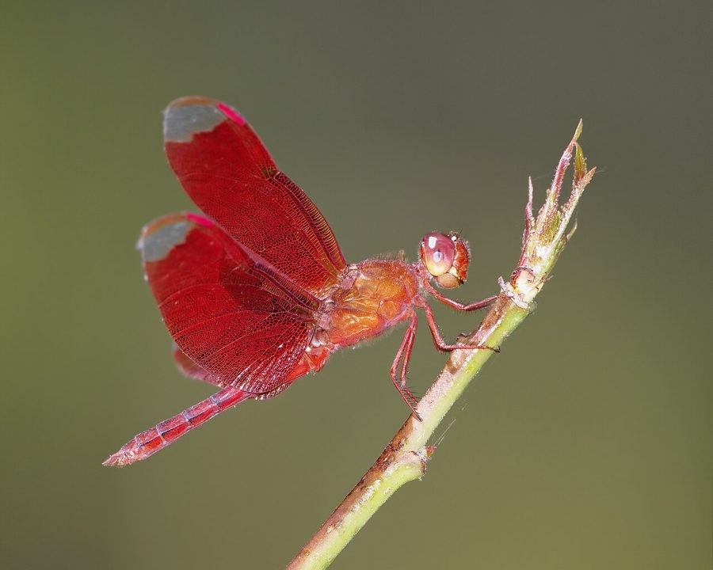

भूरी व्याधपतंगFulvous Forest Skimmer
Neurothemis fulvia · Libellulidae · INS-0017

- Scientific name
- Neurothemis fulvia (Drury, 1773)
- Family
- Libellulidae
- Hindi
- भूरी व्याधपतंग
- Status here
- native
- IUCN
- LC
When to look कब देखें
Present all year.
भूरी व्याधपतंग / Fulvous Forest Skimmer
Neurothemis fulvia (Drury, 1773) — Libellulidae
भूरी व्याधपतंग — हमारे बगीचों, छायादार तालाबों के किनारों और जंगलों के खुले रास्तों पर पाई जाने वाली एक मध्यम आकार की और बहुत आकर्षक व्याधपतंग (dragonfly) है। इसके वयस्क नर के पंख गहरे जंग जैसे लाल-भूरे (fulvous) रंग के होते हैं, जिनके सिरे पारदर्शी होते हैं, जबकि मादा का रंग हल्का पीला-भूरा होता है। यह प्रजाति अन्य व्याधपतंगों की तुलना में प्रदूषण और मानवीय हस्तक्षेप के प्रति अधिक संवेदनशील होती है, और यह केवल साफ पानी तथा घनी झाड़ियों वाले शांत वातावरण में ही रहना पसंद करती है। यह अक्सर तालाब के किनारे लटकती टहनियों और पत्तों पर बैठती है और पेड़ों के बीच उड़ने वाले छोटे कीटों का शिकार करती है।
Quick Identification त्वरित पहचान
| Feature | Description |
|---|---|
| Size | Medium-sized dragonfly (body length 35–40 mm; wingspan 55–68 mm) |
| Male Colour | Uniformly dark reddish-brown body; wings are deeply tinted rust-brown with clear black tips |
| Female Colour | Pale yellow-brown body; wings clear or with faint brownish patterns |
| Wings | Reticulated with dense brown veins; wing tips (apex) are contrasting and clear |
| Behaviour | Perches frequently on tall grass and low shrubs in shady, sheltered environments |
Field tip: Look for a dragonfly with completely rust-brown wings except for clear patches at the tips. Unlike open-wetland species, this skimmer prefers shaded areas under trees and orchards near water.
Morphology आकारिकी
Biometrics (typical measurements in the northern Indian plains):
| Measurement | Range |
|---|---|
| Body length | 35–40 mm |
| Hindwing length | 26–32 mm |
| Wing span | 55–68 mm |
Adult description: The adult male is characterised by a reddish-brown head and face. The thorax and abdomen are a uniform dark rusty-red or fulvous brown. The wings are heavily pigmented with dark reddish-brown from the base up to the pterostigma, leaving only the extreme tips transparent. The female is olive-brown with dark stripes, and her wings are either clear or show variable amber patterns with a dark brown strip along the leading edge.
Vocalisations
Odonates do not possess vocal organs and cannot produce true vocalisations.
- Sound production: Wing-whirring sounds are produced by rapid wingbeats during territorial disputes, pursuit of prey, or courtship maneuvers. The wing-beat frequency is approximately 30–35 Hz.
Behaviour & Ecology व्यवहार और पारिस्थितिकी
As a water quality indicator, Neurothemis fulvia is a sensitive species. It is more susceptible to pesticide contamination and organic pollution than Trithemis aurora or Brachythemis contaminata. Its presence indicates a relatively clean, undisturbed aquatic habitat with plenty of marginal and overhanging woody vegetation.
Larval (Naiad) Stage
The larval stage is aquatic and lives hidden in aquatic plants or leaf litter.
- Body form and breathing: The larvae have a slender to moderately robust brown body, covered with setae to trap mud particles. They breathe through internal rectal tracheal gills, extracting oxygen by taking water into the rectal chamber.
- Habitat and duration: They reside in clean water pools, shaded pond margins, and slow streams, hiding among submerged plants and decaying forest leaf litter. The larval stage lasts for approximately 8–10 weeks.
- Emergence: Mature larvae climb up vertical stems of reeds, shrubs, or tree roots near the water's edge at night to undergo metamorphosis into adults.
Life Cycle / Phenology जीवन चक्र
- Egg: Laid in flight by the female dipping her abdomen onto water near overhanging plants.
- Larva: Inhabits unpolluted, shaded waters, preying on small aquatic organisms.
- Emergence: Peak emergence is observed during the early monsoon months (June to August).
- Adult lifespan: Approximately 5–6 weeks.
- Seasonality: Active year-round in wet zones, with adults most abundant during the warm humid monsoon months.
Host Plants or Prey आहार
Prey (adults):
- Small midges and flies
- Mosquitoes
- Small moths and leafhoppers
Prey (larvae):
- Small insect nymphs (mayfly, chironomids)
- Mosquito larvae
- Small water invertebrates (Daphnia, copepods)
Predators / Natural Enemies शत्रु
- Birds: Forest insectivores like flycatchers, bee-eaters, and tree pies.
- Spiders: Giant wood spiders and orb-weavers inhabiting shaded branches.
- Vertebrates: Tree frogs and garden lizards.
Agricultural / Human Relevance कृषि प्रासंगिकता
Natural pest controller in orchards. They are highly active in orchards (mango, guava) and agroforestry plots adjacent to water bodies. They prey on pests such as leafhoppers and small moths, aiding in natural biological control. They are highly sensitive to chemical sprays, and their populations decline sharply in chemically treated orchards.
Expected Locally स्थानीय रूप से अपेक्षित
Not a field record. Written from published accounts for eastern Uttar Pradesh. No confirmed local sighting yet — if you have seen it, that is what the atlas needs.
अभी तक स्थानीय पुष्टि नहीं। यह विवरण प्रकाशित स्रोतों से है, किसी अवलोकन से नहीं।
Commonly found in the shaded mango orchards (Mangifera indica) and bamboo groves near the Ghaghra river floodplain in Basti district. They prefer resting in shaded corridors under trees rather than flying over open hot wetland surfaces. Their fluttering, butterfly-like flight in shaded gardens is a characteristic sight during the monsoon.
Distribution वितरण
Global range: Widespread across South and Southeast Asia, from Pakistan and India, through Nepal and Bangladesh, to China, Thailand, and Indonesia.
In India: Widespread in deciduous forest tracts and well-vegetated plains.
In Uttar Pradesh: Localized to districts with good tree cover and clean wetlands.
In Basti district / eastern UP: Found in shaded gardens, village orchards, and swampy forest patches.
Research Questions शोध प्रश्न
Anyone can investigate these | कोई भी इन प्रश्नों की जाँच कर सकता है
- How does the presence of overhanging tree canopy affect the abundance of perching Fulvous Forest Skimmers? — Compare counts in open pond margins vs. tree-shaded margins.
- What is the mortality rate of the larvae when exposed to low concentrations of agricultural runoff? — Test larval survival in varying water samples.
- What tree or shrub species are most frequently selected for perching in local gardens? / स्थानीय बगीचों में बैठने के लिए भूरी व्याधपतंग किस पेड़ या झाड़ी की प्रजाति को सबसे अधिक चुनती है? — Catalog preferred perch plant species.
- How do male skimmers defend their shaded territories compared to open-wetland species? — Record territorial encounter durations in shade.
- Does the removal of marginal shrubs near village ponds cause a decline in this species? / क्या गाँव के तालाबों के किनारे से झाड़ियों को हटाने से इस प्रजाति की संख्या कम हो जाती है? — Compare ponds with and without marginal vegetation.
Similar Species मिलती-जुलती प्रजातियाँ
| Species | Key Difference |
|---|---|
| Neurothemis tullia | Wings are black on the inner half with a central white band, clear at tips; smaller size |
| INS-0019 Scarlet Skimmer | Larger; bright scarlet-red body; clear wings without dark brown coloration |
| INS-0015 Crimson Marsh Glider | Pinkish-crimson body; wings clear except for minor amber patch at the base |
| INS-0002 Wandering Glider | Golden-yellow body; clear wings; flies continuously in open skies; does not prefer shade |
Field rule: Medium size, dark rust-brown wings with transparent black tips, and a preference for perching in shaded orchards and pond edges identify the Fulvous Forest Skimmer.
Taxonomy & Classification वर्गीकरण
Original description. Dru Drury described the Fulvous Forest Skimmer as Libellula fulvia in 1773 in his work Illustrations of Natural History (Vol. 2, p. 84, Pl. 46). The type locality was China. The genus name Neurothemis was established by Friedrich Brauer in 1867, and fulvia is derived from the Latin fulvus, meaning "reddish-yellow" or "tawny", describing its wing coloration.
Subspecies. Monotypic.
Family and order placement. Placed in the family Libellulidae, order Odonata.
Phylogenetic notes. Neurothemis fulvia is part of a genus of highly visual, colorful skimmers with highly patterned wings, which play an important role in sexual selection and species recognition.
IUCN status rationale. Assessed as Least Concern (LC). While localized habitat clearing affects populations, the species remains widespread and common across its range.
Photo Gallery फोटो गैलरी
References संदर्भ
- Drury, D. (1773). Illustrations of Natural History. White, London, Vol. 2, p. 84, Pl. 46, fig. 2. [original description]
- Fraser, F.C. (1936). The Fauna of British India, including Ceylon and Burma. Odonata. Vol. 3. Taylor and Francis, London.
- Prasad, M. & Varshney, R.K. (1995). A checklist of the Odonata of India. Oriental Insects, 29(1), 385-428.
- Mitra, T.R. (2002). Geographical distribution of Odonata (Insecta) of Eastern India. Zoological Survey of India, Kolkata.
- IUCN SSC Odonata Specialist Group. (2024). Neurothemis fulvia. IUCN Red List of Threatened Species. Ver. 2024.
- GBIF Occurrence Data — Neurothemis fulvia, Uttar Pradesh (2010–2025).
Source file: species/fauna/insects/fulvous_forest_skimmer.md